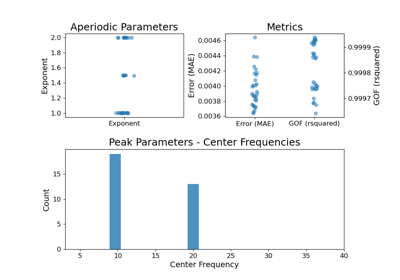

specparam.sim.sim_group_power_spectra¶
- specparam.sim.sim_group_power_spectra(n_spectra, freq_range, aperiodic_params, periodic_params, nlvs=0.005, freq_res=0.5, f_rotation=None, return_params=False)[source]¶
Simulate multiple power spectra.
- Parameters:
- n_spectraint
The number of power spectra to generate.
- freq_rangelist of [float, float]
Frequency range to simulate power spectra across, as [f_low, f_high], inclusive.
- aperiodic_paramsdict of {strarray}
Mode definition and parameters to create the aperiodic components of the power spectra. Should be organized as {mode : params}, where mode is a string label for a mode to simulate with and params (array_like or generator) defines the aperiodic parameters.
- periodic_paramsdict of {strlist of float or list of list of float}
Mode definition and parameters to create the periodic components of the power spectras. Should be organized as {mode : params}, where mode is a string label for a mode to simulate with and params (array_like or generator) defines the periodic parameters.
- nlvsfloat or list of float or generator, optional, default: 0.005
Noise level to add to generated power spectrum.
- freq_resfloat, optional, default: 0.5
Frequency resolution for the simulated power spectra.
- f_rotationfloat, optional
Frequency value, in Hz, to rotate around. Should only be set if spectrum is to be rotated. Can only be used with powerlaw aperiodic mode. See additional notes in sim_power_spectra on rotating simulated power spectra.
- return_paramsbool, optional, default: False
Whether to return the parameters for the simulated spectra.
- Returns:
- freqs1d array
Frequency values, in linear spacing.
- powers2d array
Matrix of power values, in linear spacing, as [n_power_spectra, n_freqs].
- sim_paramslist of SimParams
Definitions of parameters used for each spectrum. Has length of n_spectra. Only returned if return_params is True.
Notes
Parameters options can be:
A single set of parameters. If so, these same parameters are used for all spectra.
A list of parameters whose length is n_spectra. If so, each successive parameter set is such for each successive spectrum.
A generator object that returns parameters for a power spectrum. If so, each spectrum has parameters sampled from the generator.
Examples
Generate 2 power spectra using the same parameters:
>>> freqs, powers = sim_group_power_spectra(2, [1, 50], {'fixed' : [0, 2]}, ... {'gaussian' : [10, 0.5, 1]})
Generate 10 power spectra, randomly sampling possible parameters:
>>> from specparam.sim.params import param_sampler >>> ap_opts = param_sampler([[0, 1.0], [0, 1.5], [0, 2]]) >>> pe_opts = param_sampler([[], [10, 0.5, 1], [10, 0.5, 1, 20, 0.25, 1]]) >>> freqs, powers = sim_group_power_spectra(10, [1, 50], ... {'fixed' : ap_opts}, {'gaussian' : pe_opts})
Generate 5 power spectra, rotated around 20 Hz:
>>> ap_params = [[None, 1], [None, 1.25], [None, 1.5], [None, 1.75], [None, 2]] >>> pe_params = [10, 0.5, 1] >>> freqs, powers = sim_group_power_spectra(5, [1, 50], {'fixed' : ap_params}, ... {'gaussian' : pe_params}, f_rotation=20)
Generate power spectra stepping across exponent values, and return parameter values:
>>> from specparam.sim.params import Stepper, param_iter >>> ap_params = param_iter([0, Stepper(1, 2, 0.25)]) >>> pe_params = [10, 0.5, 1] >>> freqs, powers, sps = sim_group_power_spectra(5, [1, 50], {'fixed' : ap_params}, ... {'gaussian' : pe_params}, return_params=True)
Examples using specparam.sim.sim_group_power_spectra¶



Fitting Power Spectrum Models Across 3D Arrays